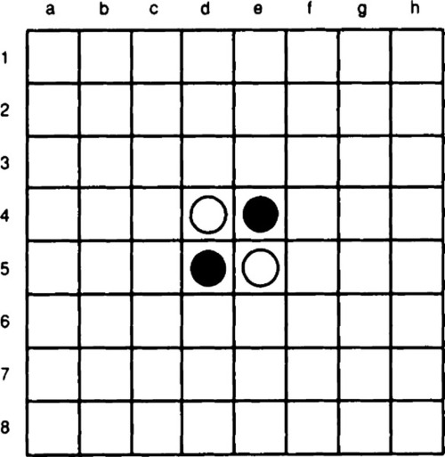
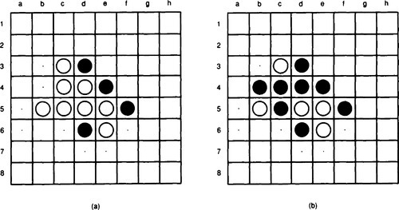
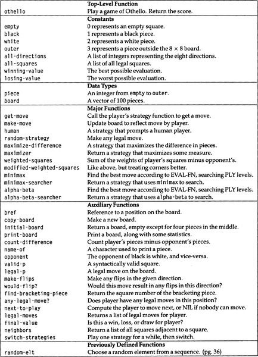
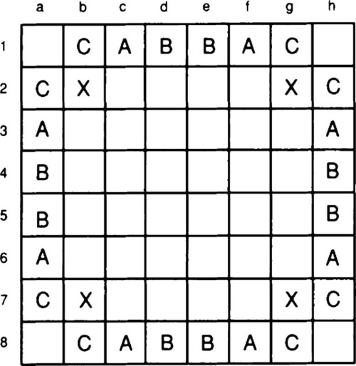
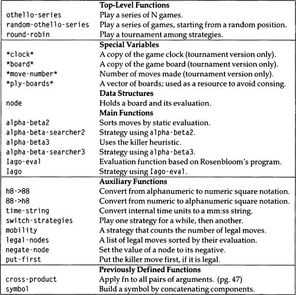

|
paip-ru
1
|
В сознании новичка есть бесконечные возможности; в экспертном мало.
-Suzuki Roshi, Zen Master
**Г**еймерские игры были целью многих ранних работ в области ИИ по трем причинам. Во-первых, правила большинства игр формализованы, и их довольно легко реализовать в компьютерной программе. Во-вторых, во многих играх требования к интерфейсу тривиальны. Компьютеру нужно только распечатать свои ходы и прочитать ходы противника. Это верно для таких игр, как шахматы и шашки, но не для пинг-понга и баскетбола, где решающее значение имеют зрение и моторика. В-третьих, хорошая игра в шахматы считается многими интеллектуальным достижением. Ньюэлл, Шоу и Саймон говорят: "Шахматы - интеллектуальная игра * par excellence *", а Дональд Мичи назвал шахматы "Дрозофила(мушка для испытаний)*Drosophila melanogaster* машинного интеллекта», имея в виду, что шахматы - относительно простая, но интересная область, которая может привести к достижениям в области искусственного интеллекта, точно так же, как изучение плодовой мухи способствовало развитию биологии.
Сегодня ИИ уделяет меньше внимания играм. Было понято, что методы, которые хорошо работают в ограниченной области настольной игры, не обязательно приводят к разумному поведению в других областях. Кроме того, как оказалось, методы, позволяющие компьютерам играть хорошо, отличаются от техник, которые используют хорошие игроки-люди. Люди способны распознавать абстрактные модели, извлеченные из предыдущих игр, и разрабатывать планы атаки и защиты.
В то время как большая часть предыдущей работы по игре была сосредоточена на шахматах и шашках, в этой главе демонстрируется программа для игры в Отелло. 1 Отелло - это разновидность игры Реверси девятнадцатого века. Программировать эту игру легко, потому что правила проще, чем в шахматах. "Отелло" также полезно программировать, потому что простой метод поиска может дать отличного игрока. На это есть две причины. Во-первых, количество разрешенных ходов за ход невелико, поэтому поиск не слишком взрывной. Во-вторых, один ход Отелло может перевернуть дюжину или более фигур противника. Это мешает игрокам-людям визуализировать отдаленные последствия своего хода. Программы, основанные на поиске, это не сбивают с толку и, таким образом, хорошо работают по сравнению с людьми.
Само название "Отелло" происходит от того, что игра настолько непредсказуема, как венецианский мавр. Название также может быть намеком на фразу: "Ваша дочь и мавр теперь делают зверя с двумя спинами" 2, поскольку у игровых фишек действительно есть две спинки, одна белая и одна черная. В любом случае связь между игрой и спектаклем переносится на названия нескольких программ: Кассио, Яго и Билла. Последние два будут рассмотрены в этой главе. Они равны или даже лучше, чем игроки-чемпионы. Мы сможем разработать упрощенную версию, которая не будет чемпионом, но будет намного лучше, чем у начинающих игроков.
В Отелло играют на доске 8 на 8, которая изначально расставлена с четырьмя фигурами в центре, как показано на рис. 18.1. Два игрока, черный и белый, по очереди ходят, причем черные играют первыми. На каждом ходу игрок кладет на доску фишку своего цвета. После размещения фишку нельзя переместить, но последующие ходы могут перевернуть фишку из одного цвета в другой. Каждая фишка должна быть размещена таким образом, чтобы скреплять одну или несколько фишек соперника. То есть, когда черные играют фигуру, должна быть линия (горизонтальная, вертикальная или диагональная), которая проходит через только что сыгранную фигуру, затем через одну или несколько белых фигур, а затем через другую черную фигуру. Промежуточные белые фигуры переворачиваются на черные. Если белые фигуры в квадратных скобках расположены более чем в одном направлении, они все переворачиваются. Рисунок 18.2 (a) указывает допустимые ходы черных маленькими точками. Рисунок 18.2 (b) показывает позицию после того, как черные перейдут на поле b4. Игроки ходят по очереди, за исключением того, что пасовать должен игрок, у которого нет разрешенных ходов. Когда ни один из игроков не имеет ходов, игра заканчивается, и побеждает игрок с наибольшим количеством фигур на доске. Обычно это происходит из-за того, что не осталось пустых квадратов, но иногда это случается в игре и раньше.
| []() |
|---|

|
| Рисунок 18.1: Доска Отелло |
| []() |
|---|

|
| Рисунок 18.2: Законные перемещения в Отелло |
При разработке программы "Отелло" мы захотим протестировать различные стратегии, используя стратегии играть друг против друга и против игроков-людей. Мы также можем захотеть, чтобы наша программа позволяла двум людям играть в игру. Следовательно, наша основная функция, othello, будет функцией мониторинга, которая принимает в качестве аргументов две стратегии. Она использует эти стратегии для получения ходов каждого игрока, а затем применяет эти ходы к представлению игрового поля, возможно, распечатывая доску по мере ее продвижения.
Первый выбор, который нужно сделать, - как представить доску и фигуры на ней. Доска представляет собой квадрат 8 на 8, и каждый квадрат может быть заполнен черной или белой фигурой или может быть пустым. Таким образом, очевидный выбор представления состоит в том, чтобы сделать доску массивом 8 на 8, где каждый элемент массива представляет собой символ black/черный, white/белый или nil/ничего.
Обратите внимание на то, что здесь происходит: мы следуем обычному соглашению Лиспа о реализации перечислимого типа (типа частей, которые могут заполнять квадрат) как набора символов. Это подходящее представление, поскольку оно поддерживает основную операцию над элементами перечислимого типа: проверка на равенство с помощью eq. Оно также легко поддерживает ввод и вывод.
Во многих других языках (например, C или Pascal) перечисляемые типы реализованы как целые числа. В Паскале можно было объявить:
чтобы определить piece как набор из трех элементов, который рассматривается как подтип целых чисел. Язык не допускает прямого ввода и вывода таких типов, но равенство можно проверить. Преимущество этого подхода в том, что элемент можно разместить в небольшом пространстве. В области Отелло мы ожидаем, что эффективность будет важна, потому что один из способов выбрать хороший ход - это посмотреть на большое количество возможных последовательностей ходов и выбрать последовательность, которая приводит к благоприятному результату. Таким образом, мы готовы внимательно изучить альтернативные представления, чтобы найти эффективное. Для представления одного из трех возможных типов требуется всего два бита, тогда как для представления символа требуется гораздо больше (возможно, 32). Таким образом, мы можем сэкономить место, представляя pieces(части) в виде небольших целых чисел(small integers), а не символов.
Далее рассматриваем доску. Двумерный массив кажется настолько очевидным выбором, что трудно представить лучшее представление. Мы могли бы рассмотреть 8-элементный список из 8-ми элементов, но это просто потеряло бы пространство (для cons-ячеек) и время (при доступе к более поздним элементам списков). Однако нам придется реализовать два других абстрактных типа данных, которые мы еще не рассматривали: square(клетка) и direction(направление). Нам понадобится, например, изобразить клетку, в который игрок выбирает двигаться. Это будет пара целых чисел, например 4,5. Мы могли бы представить его как список из двух элементов или, более компактно, как cons-ячейку, но это все равно означает, что нам, возможно, придется генерировать мусор (создавать cons-ячейку) каждый раз, когда мы хотим обратиться к новой клетке. Точно так же нам нужно иметь возможность сканировать в заданном направлении(direction) от клетки в поисках частей, которые нужно перевернуть. Направления(direction) будут представлены парой целых чисел, например + 1, -1. Одна из умных возможностей - использовать комплексные числа как для клеток, так и для направлений, при этом действительный компонент отображается на горизонтальной оси, а мнимый компонент - на вертикальную ось. Затем перемещение в заданном направлении от клетки выполняется простым добавлением направления к клетке. Но в большинстве реализаций создание новых комплексных чисел также генерирует мусор.
Другая возможность состоит в том, чтобы представить клетку (и направления) как два различных целых числа, а процедуры, которые ими управляют, принимают два аргумента вместо одного. Это было бы эффективно, но теряется важная абстракция: клетки (и направления) концептуально являются едиными объектами.
Выход из этой дилеммы - представление доски в виде одномерного вектора. Клетки представлены целыми числами в диапазоне от 0 до 63. В большинстве реализаций маленькие целые числа (fixnums) представлены как непосредственные данные, которыми можно манипулировать, не создавая мусора. Направления также могут быть реализованы как целые числа, представляющие числовую разницу между соседними квадратами вдоль этого направления. Чтобы почувствовать это, взгляните на доску:
Вы можете видеть, что направление +1 соответствует движению вправо, +7 соответствует диагональному движению вниз и влево, +8 - вниз, а +9 - по диагонали вниз и вправо. Отрицания этих чисел (-1, -7, -8, -9) представляют противоположные направления.
У этой схемы есть одна сложность: нам нужно знать, когда мы попадаем на край доски. Начиная с клетки 0, мы можем двигаться в направлении +1 семь раз, чтобы добраться до правого края доски, но нам не разрешено снова двигаться в этом направлении, чтобы добраться до клетки 8. Можно проверить край доски, рассматривая частные и остатки по модулю 8, но это довольно сложно и дорого.
Более простое решение - явно представить край доски с помощью вектора из 100 элементов вместо вектора из 64 элементов. Внешние элементы отмечены маркером, указывающим на то, что они находятся за пределами доски. Это представление занимает немного места, но значительно упрощает обнаружение границ. Оно также имеет небольшое преимущество в том, что допустимые клетки представлены числами в диапазоне 11-88, что упрощает их понимание во время отладки. Вот новая доска из 100 элементов:
Горизонтальное направление теперь ±1, вертикальное ±10, а диагонали ±9 и ±11. Мы предварительно примем это последнее представление, но оставим возможность перехода на другой формат. Приняв это решение, мы готовы начать. Рисунок 18.3 - это глоссарий для полной программы. Глоссарий второй версии программы находится на стр. 623.
| []() |
|---|

|
| Рисунок 18.3: Глоссарий программы Отелло |
*(ed: this should be a markdown table)*
Далее следует код directions(направлений) и pieces(частей). Мы явно определяем тип piece как число от empty до outer (от 0 до 3), и определяем функцию name-of для сопоставления номера piece(части) с символом: точка для пустого, @ для черного, 0 для белого и вопросительный знак (который никогда не следует печатать) для outer.
А вот код board(доски). Обратите внимание, что мы вводим функцию bref для "ссылок на доске", а не используем встроенную функциюиaref. Это облегчает возможные изменения в представлении досок. Кроме того, даже несмотря на то, что не существует непрерывного диапазона чисел, который представляет допустимые квадраты, мы можем определить константу all-squares как список из 64 разрешенных клеток, вычисленных как числа от 11 до 88, значение которых по модулю 10 равно от 1 до 8.
Теперь давайте посмотрим на исходную доску, поскольку она печатается с помощью print-board и необработанной write (я добавил разрывы строк, чтобы было легче читать):
Обратите внимание, что print-board предоставляет некоторую дополнительную информацию: количество фигур, которыми владеет каждый игрок, и разницу между этими двумя значениями.
Следующим шагом является правильная обработка ходов: учитывая доску и клетку, на которые нужно перейти, обновите доску, чтобы отразить эффекты перемещения игрока на эту клетку. Это означает перебрасывание фигур противника. Одно из проектных решений состоит в том, будет ли процедура, выполняющая ходы, make-move, отвечать за проверку условий ошибки. Я решил, что make-move предполагает, что будет принят законный ход. Таким образом, стратегия может использовать эту функцию для исследования последовательности ходов, которые заведомо допустимы, без замедления make-move. Конечно, чтобы убедиться, что перемещение законно, потребуются отдельные процедуры. Здесь мы вводим два термина: valid/действительный ход - это тот, который синтаксически правильный: целое число от 11 до 88, которое не выходит за пределы доски. legal/законный ход - это допустимый ход в пустую клетку, который перевернет хотя бы одного противника. Вот код:
Теперь все, что нам нужно, это make-flips. Для этого мы ищем во всех направлениях фишку в скобках: фигура, принадлежащая игроку, который делает ход, которая бутербродирует(находиться в рядах фигур противника) цепочку фигур противника Если в этом направлении нет фишек соперника или если перед фишкой игрока попадает пустая или внешняя фишка, то броски не производятся. Обратите внимание, что would-flip? - это полупредикат, который возвращает false, если никакие перевороты не будут выполнены в данном направлении, и возвращает клетку фигуры "в скобках", если таковая имеется.
Наконец, мы можем написать функцию, которая действительно отслеживает игру. Но сначала перед нами стоит еще один важный выбор: как мы будем представлять игрока? Мы уже различали фигуры черных и белых, но еще не решили, как запрашивать ходы черных или белых. Я предпочитаю представлять стратегии игрока как функции. Каждая функция принимает два аргумента: цвет для перемещения (черный или белый) и текущую доску. Функция должна возвращать допустимый номер хода.
Мы должны иметь возможность определять, кто будет играть следующим в любой момент. Правила гласят, что игроки ходят по очереди, но если у одного игрока нет разрешенных ходов, другой может двигаться снова. Когда ни один из них не имеет возможности сделать ход, игра окончена. Обычно это происходит из-за того, что не остается пустых квадратов, но иногда это происходит и раньше в игре. Побеждает игрок, у которого в конце игры будет больше фигур. Если ни у одного игрока нет преимущества, игра заканчивается вничью.
Обратите внимание, что аргумент print (of othello, next-to-play, и ниже, get-move) определяет, будет ли напечатана информация о ходе игры. Для интерактивной игры print должен быть истинным, но также можно играть в "пакетную" игру с print, установленным в false.
В get-move ниже вызывается функция strategy(стратегии) игрока, чтобы определить его ход. Выявляются незаконные ходы, и правильные ходы сообщаются, когда print имеет значение true. В функцию strategy передается число, представляющее игрока, который должен ходить (черный или белый), и копия доски. Если бы мы прошли настоящую игровую доску, функция могла бы обмануть, меняя фигуры на доске!
Здесь мы определяем две простые стратегии:
Теперь мы можем играть в эту игру. Выражение
(othello #'human #'human) позволит двум людям играть друг против друга. В качестве альтернативы (othello #'random-strategy #'human) позволит нам сопоставить наш ум с особенно плохой стратегией. Остальная часть этой главы показывает, как разработать лучшую стратегию.
Стратегия random-move(случайного хода), конечно, плохая. Мы хотели бы сделать хороший ход, а не случайный, но пока мы не знаем, что дает ход хорошим. Единственные позиции, которые мы можем точно оценить, - это финальные позиции: когда игра окончена, мы знаем, что побеждает игрок с наибольшим количеством фигур. Это предлагает стратегию: выберите ход, который максимизирует count-difference(количество различий), разность фигур. Именно этим и занимается функция maximize-difference. Он вызывает maximizer, функцию высшего порядка, которая выбирает лучший ход в соответствии с произвольной оценочной функцией.
Упражнение 18.1 Поиграйте в несколько игр с maximize-difference против random-strategy и human. Насколько хороша maximize-difference?
Те, кто завершит это упражнение, быстро увидят, что игрок maximize-difference лучше, чем случайный, и может даже победить игроков-людей в своей первой или второй игре. Но большинство людей способны совершенствоваться, научившись извлекать выгоду из чрезмерно жадной игры maximize-difference(максимизировать разницу). Люди узнают, что, например, крайние клетки ценны, потому что игрок, доминирующий на краях, может окружить противника, в то время как захватить край трудно. Особенно это касается угловых клеток, которые невозможно отбить.
Используя эти знания, умный игрок может временно пожертвовать фишками, чтобы получить крайние и угловые поля в краткосрочной перспективе и отыграть фишки в долгосрочной перспективе. Мы можем аппроксимировать некоторые из этих рассуждений с помощью оценочной функции weighted-squares(взвешенных клеток). Как и count-difference, она складывает все фишки игрока и вычитает противников, но каждая фишка взвешивается в соответствии с занимаемой ею клеткой. Квадраты с гранями имеют высокий вес, угловые квадраты еще выше, а квадраты, прилегающие к углам и краям, имеют отрицательный вес, потому что занятие этих квадратов часто дает противнику возможность захватить желаемый квадрат. Рисунок 18.4 показывает стандартную номенклатуру краевых клеток: X, A, B и C. В общем, следует избегать клеток X и C, потому что их взятие дает противнику шанс занять угол. Функция оценки weighted-squares(взвешенных клеток) отражает это.
| []() |
|---|

|
| Рисунок 18.4: Названия краевых клеток |
Упражнение 18.2 Сравните стратегии, вычислив две формы ниже. Что просходит? Это хороший тест, чтобы определить, какая стратегия лучше?
Даже стратегия weighted-squares(взвешенных клеток) не подходит для опытного игрока. Есть два способа улучшить стратегию. Во-первых, мы могли бы изменить функцию оценки, чтобы учесть больше информации. Но даже не изменяя функцию оценки, мы можем улучшить стратегию, заглянув вперед. Вместо того чтобы выбирать ход, который сразу приводит к наивысшему количеству очков, мы также можем рассмотреть возможные ответы оппонента, наши ответы на эти ответы и так далее. Просматривая несколько уровней ходов, мы можем избежать потенциальной катастрофы и найти хорошие ходы, которые не были очевидны сразу.
Другой способ взглянуть на функцию maximizer - как на функцию поиска, которая ищет только один уровень или *ply/*слой, в глубину:
Верхняя часть дерева - это текущая позиция на доске, а квадраты ниже указывают на возможные ходы. Функция maximizer оценивает каждый из них и выбирает лучший ход, который подчеркнут на диаграмме.
Теперь посмотрим, как может пройти трехслойный поиск(3-ply). Первый шаг - применить maximizer к позициям чуть выше нижней части дерева. Предположим, мы получили следующие значения:
Каждая позиция показана как имеющая два возможных допустимых хода, что нереально, но позволяет разместить диаграмму на странице. В реальной игре обычно от пяти до десяти разрешенных ходов на позицию. Значения в листьях дерева были вычислены с применением функции оценки, в то время как значения на один уровень выше были вычислены с помощью maximizer. В результате мы знаем, какой наш лучший ход для любой из четырех позиций чуть выше нижней части дерева.
Поднимаясь на уровень выше, наступает очередь соперника двигаться. Мы можем предположить, что противник выберет ход, который принесет нам минимальную ценность, которая будет максимальной ценностью для оппонента. Таким образом, противник может выбрать 10- и 9-значные позиции, избегая 20- и 23-значных позиций.
Теперь наша очередь двигаться снова, поэтому мы снова применяем maximizer, чтобы получить окончательное значение позиции верхнего уровня:
Если оппонент играет так, как ожидалось, мы всегда будем следовать за левой ветвью дерева и окажемся на позиции со значением 10. Если противник будет играть иначе, мы окажемся в более выгодной позиции.
Этот вид поиска традиционно называется поиском minimax(минимакс) из-за альтернативного применения функции maximizer и гипотетической функции minimizer. Обратите внимание, что функция оценки просматривает только позиции листьев в дереве. Значение(ценность) всех остальных позиций определяется минимизацией и максимизацией.
Мы почти готовы написать алгоритм алгоритм minimax, но сначала нам нужно принять несколько конструктивных решений. Во-первых, мы могли бы написать две функции, minimax и maximin, которые соответствуют анализу двух игроков. Однако проще написать одну функцию, которая максимизирует ценность позиции для конкретного игрока. Другими словами, добавляя игрока в качестве параметра, мы избавляемся от необходимости писать две идентичные функции.
Во-вторых, мы должны решить, собираемся ли мы написать поисковую программу общего минимаксного или специфического для Отелло поисковика. Я выбрал второй вариант из соображений эффективности, а также потому, что есть некоторые специфические для Отелло осложнения, которые необходимо учитывать. Во-первых, возможно, что у игрока не будет разрешенных ходов. В этом случае мы хотим продолжить поиски движения противника. Если у соперника тоже нет ходов, то игра окончена, и значение(ценность) позиции можно окончательно определить путем подсчета фишек.
В-третьих, нам нужно определить взаимодействие между нормальной функцией оценки и этой окончательной оценкой, которая происходит по окончании игры. Мы могли бы настоять на том, чтобы каждая функция оценки определяла, когда игра окончена, и выполняла правильные вычисления. Но это перегружает оценочные функции и может привести к бесполезной проверке в конце игры. Вместо этого я реализовал отдельную функцию оценки final-value, которая возвращает 0 для ничьей, большое положительное число для выигрыша и большое отрицательное число для проигрыша. Поскольку арифметика фиксированных целых чисел(fixnum) наиболее эффективна, используются константы most-positive-fixnum и most-negative-fixnum. Функции оценки должны быть аккуратны, чтобы возвращать числа, которые находятся в этом диапазоне. Все оценочные функции в этой главе будут в пределах допустимого диапазона, если фиксированные числа(fixnums) составляют 20 или более бит.
В турнире важно не только, кто выиграет и проиграет, но и насколько. Если бы мы пытались максимизировать вероятность победы, тогда final-value было бы изменено, чтобы включить небольшой коэффициент для окончательной разницы.
И, наконец, в-четвертых, нам нужно определиться с параметрами функции minimax. Как и другие функции оценки, она требует, для перемещения(хода) - игрока и текущей доски, в качестве параметров. Также требуется указание количества слоев для поиска(ply) и функция статической оценки, применяемой к позициям листьев. Таким образом, minimax будет функцией четырех аргументов. Что она вернет? Она должна вернуть лучший ход, но она также должна вернуть ценность(значение) этого хода в соответствии со статической функцией оценки. Для этого мы используем несколько значений.
Функция minimax не может использоваться как функция стратегии как есть, потому что она принимает слишком много аргументов и возвращает слишком много значений. Функционал minimax-searcher возвращает подходящую стратегию. Помните, что стратегия - это функция двух аргументов: игрока и доски. get-move отвечает за передачу правильных аргументов функции, поэтому стратегии не нужно беспокоиться о том, откуда эти аргументы.
Мы можем протестировать минимаксную стратегию и увидеть, что поиск вперед на 3-и слоя действительно лучше, чем смотреть только на 1-й слой. Я показываю только окончательный результат, который демонстрирует, что иметь возможность смотреть вперед - действительно преимущество:
The game is over. Final result:
Проблема с полным минимаксным(minimax) поиском в том, что он учитывает слишком много позиций. Он смотрит(проверяет) на каждую линию игры, в том числе и на множество невероятных. К счастью, есть способ найти оптимальную линию игры, не обращая внимания на все возможные позиции. Вернемся к нашему знакомому дереву поиска:
Здесь мы отметили определенные позиции вопросительными знаками. Идея состоит в том, что все дерево поиска оценивается как 10 независимо от значения позиций с меткой ?*i*. Рассмотрим позицию с меткой ?1. Не имеет значения, как оценивается эта позиция, потому что противник всегда будет выбирать игру в сторону 10-й позиции, чтобы избежать возможности 15-й позиции. Таким образом, мы можем прервать поиск на этом этапе и не рассматривать ?- позицию. Такой вид отсечки исторически назывался отсечкой beta(бета).
Теперь рассмотрим позицию ?4. Не имеет значения, как оценивается эта позиция, потому что мы всегда будем предпочитать выбирать позицию 10 на левой ветви, а не давать противнику возможность играть в позиции 9. Это отсечка alpha(альфа). Обратите внимание, что она отсекает целое поддерево позиций под ним (помеченных ?2 и ?3).
В общем, мы отслеживаем два параметра, которые ограничивают истинное значение текущей позиции. Нижняя граница - это значение, которое, как мы знаем, мы можем достичь, выбрав определенную линию игры. Идея состоит в том, что нам даже не нужно рассматривать ходы, которые приведут к более низкому значению, чем это. Нижнюю границу традиционно называют альфа, но мы будем называть ее achievable(достижимой). Верхняя граница представляет значение, которого может достичь противник, выбрав определенную линию игры. Оно было названо beta, но мы будем называть его cutoff(отсечением). Опять же, идея состоит в том, что нам не нужно рассматривать ходы с более высоким значением(оценкой), чем эта (потому что тогда противник избежит хода, который так хорош для нас). Алгоритм alpha-beta(альфа-бета) просто minimax(минимаксный), но без необходимости некоторых ненужных оценок, отсеченных этими двумя параметрами.
На более глубоких деревьях с более высокими коэффициентами ветвления можно обрезать гораздо больше оценок. В общем, дерево глубины d и коэффициента ветвления b требует bd оценок для полного minimax(минимакса) и всего лишь b**d/2 оценок с минимаксом альфа-бета.
Чтобы реализовать поиск по альфа-бета, мы добавляем еще два параметра к функции minimax и переименовываем ее в alpha-beta. achievable(достижимо) - это лучший результат, который может набрать игрок; это то, что мы хотим максимизировать. cutoff(обрезка) - это значение, при превышении которого противник выберет другую ветвь дерева, таким образом, оставшаяся часть текущего уровня дерева не будет иметь значения. Проверка until (>= achievable cutoff) в предпоследней строке minimax выполняет отсечку; все остальные изменения просто включают правильную передачу параметров.
Следует подчеркнуть, что alpha-beta вычисляет тот же результат, что и версия minimax с полным поиском. Единственное преимущество отсечки - ускорение поиска за счет меньшего количества позиций.
Сейчас хорошее время, чтобы остановиться и проанализировать, куда мы ушли. Мы продемонстрировали программу, которая может играть в legal(легальную) игру Отелло, а также некоторые стратегии, которые могут сыграть или не сыграть в хорошую игру. Сначала мы рассмотрим некоторые отдельные игры, чтобы увидеть ошибки, допущенные некоторыми стратегиями, а затем сгенерируем некоторую статистику для серий игр.
Насколько хорошо взвешивание клеток? Мы можем сравнить его со стратегией максимального увеличения количества деталей. Такая стратегия, конечно, была бы идеальной, если бы она могла смотреть в будущее до конца игры, но скорость наших компьютеров ограничивает нас поиском только несколькими слоями, даже с отсечками. Рассмотрим следующую игру, в которой черные максимизируют разницу в количестве фигур, а белые максимизируют взвешенную сумму клеток. Оба ищут на глубину 4 слоя:
Черные могут резко увеличить разницу в фигурах по ходу игры. После 17 ходов у белых остается только одна фигура:
Несмотря на отставание на 19 очков, белые на самом деле находятся в хорошей позиции, потому что фигура в углу безопасна и угрожает многим фигурам черных. Белые могут сохранять хорошую позицию, численно сильно отставая от черных, как показано в следующих позициях позже в партии:
После некоторого компромисса белые навсегда получают преимущество, захватив восемь фигур на ходу на клетке 85 на предпоследнем ходу игры:
The game is over. Final result:
Белые выигрывают 16 фигурами. Стратегия черных была слишком жадной: черные были готовы отказаться от позиции (все четыре угла и все поля, кроме четырех) ради временного материального выигрыша.
Увеличение глубины поиска не компенсирует ошибочную функцию оценки. В следующей игре глубина поиска черных увеличивается до 6 слоев, а у белых остается 4. Происходит то же самое, хотя судьба черных разворачивается немного дольше.
Черные медленно наращивают перевес:
Но в этот момент белые имеют свободный доступ к верхнему левому углу и через этот угол угрожают захватить весь верхний край. Тем не менее, черные сохраняют материальное преимущество в ходе игры:
Но в конечном итоге стратегия белых с взвешенными полями выходит вперед:
и умеет держаться за победу:
Это показывает, что перебор не панацея. Хотя полезно иметь возможность искать глубже, можно получить больше выгоды, сделав функцию оценки более точной. Есть много проблем с функцией вычисления взвешенных клеток. Снова рассмотрим эту позицию из первой игры выше:
Здесь белые, используя стратегию взвешенных полей, предпочли сыграть 66. Вероятно, это ошибка, поскольку 13 расширит доминирование белых на верхнем краю и позволит белым играть снова (поскольку у черных не будет разрешенных ходов). К сожалению, белые отвергают этот ход, прежде всего потому, что поле 12 имеет вес -20. Таким образом, есть сдерживающий фактор для взятия этой клетки. Но 12 имеет вес -20, потому что брать такое поле(клетку), когда угол пуст, - плохая идея - тогда у оппонента будет шанс захватить угол, вернув себе также клетку 12. Таким образом, мы хотим, чтобы у клеток вроде 12 была отрицательная оценка, когда угол пуст, но не тогда, когда он уже занят. Функция оценки modified-weighted-squares делает именно это.
Хотя функция othello служит прекрасным модератором для случайной игры, есть два момента, которые необходимо исправить для игры на уровне турнира. Во-первых, турнирные игры проходят в строго ограниченное время: игрок, которому требуется более 30 минут, чтобы сделать все ходы, выбывает из игры. Во-вторых, в стандартной нотации игр Отелло используются названия клеток в диапазоне от a1 до h8, а не в диапазоне от 11 до 88, который мы использовали до сих пор. a1 - левый верхний угол, a8 - левый нижний угол, а h8 - правый нижний угол. Мы можем написать процедуры для перевода между этой нотацией и той, которую мы использовали, создав таблицу имен клеток.
Обратите внимание, что эти подпрограммы возвращают свой ввод без изменений, если он не является одним из ожидаемых значений. Это позволяет выполнять команды, отличные от перехода к определенной клетке. Например, мы добавим функцию, которая распознает resign(отставку) как ход.
Чтобы читать ходы в этом формате, нужно немного изменить игрока human-человека. Пока мы это сделаем, мы также распечатаем список возможных ходов:
| []() |
|---|

|
| Рисунок 18.5: Глоссарий турнирной версии Отелло |
*(ed: should be a markdown table)*
Функция othello не должна беспокоиться об обозначениях, но она должна отслеживать время. Мы создаем новую структуру данных, clock(часы), которая представляет собой массив целых чисел, показывающих, сколько времени (во внутренних единицах) осталось у каждого игрока. Например, (aref clock black) - это количество времени, которое осталось черным, чтобы сделать все свои ходы. В Паскале мы бы объявили массив часов как array[black..white], но в Common Lisp все массивы начинаются с нуля, поэтому нам нужен массив из трех элементов, чтобы разрешить индекс black, который равен 2.
clock(Часы) передаётся командам get-move и print-board, но в остальыми не используются. Я мог бы усложнить основной игровой цикл, добавив тесты для расплаты из-за истекшего времени и, как мы увидим позже, отставки любого игрока. Однако я чувствовал, что это значительно усложнит редко используемые опции. Вместо этого я оборачиваю весь игровой цикл вместе с вычислением финального счета в специальную форму catch. Затем, если get-move встречает forfeit(поражение/расплату) или отставку, она может throw(выбросить) соответствующий окончательный счет: 64 или -64, в зависимости от того, какой игрок потерпел поражение.
Теперь стратегии должны соответствовать правилу ограничения по времени, поэтому они могут захотеть посмотреть на оставшееся время. Вместо того, чтобы передавать clock(часы) в качестве аргумента стратегии, я решил сохранить их в специальной переменной *clock*. Новая версия othello также отслеживает *move-number*(номер хода). Его также можно было передавать в функции стратегии в качестве параметра. Но добавление этих дополнительных аргументов потребует внесения изменений во все стратегии, которые мы разработали до сих пор. Сохраняя информацию в специальных переменных, стратегии, которые хотят видеть, могут смотреть на часы или число ходов, но другие стратегии не должны знать о них.
У нас все еще есть проблема безопасности - мы не хотим, чтобы стратегия могла обнулять оставшееся время противника и, таким образом, выигрывала игру. Таким образом, мы используем *clock* только как копию "настоящих" игровых часов. Функция replace копирует реальные часы(clock) в clock, а также копирует реальную доску в *board*.
Наконец, функция print-board должна распечатать оставшееся время для каждого игрока; для этого требуется вспомогательная функция для получения количества минут и секунд из временного интервала внутреннего формата. Обратите внимание, что мы делаем аргументы необязательными, чтобы при отладке можно было просто сказать (print-board), чтобы увидеть текущую ситуацию. Также обратите внимание на опцию эзотерического формата: "~2, '0d" печатает десятичное число, используя как минимум два разряда, с заполнением слева нулями.
Одной игры недостаточно, чтобы установить, что одна стратегия лучше другой. Следующая функция позволяет двум стратегиям соревноваться в серии игр:
Давайте посмотрим, что произойдет, когда мы используем её, чтобы сопоставить две функции взвешивания клеток друг с другом в серии из десяти игр:
Что-то тут подозрительно - повторяются одни и те же оценки. Небольшое раздумье показывает, почему: ни одна стратегия не имеет случайного компонента, поэтому одна и та же игра была сыграна пять раз, причем одна стратегия все время была первой, и игра была сыграна пять раз, когда другая стратегия была первой! Более точная оценка относительной ценности двух стратегий может быть получена, если начинать каждую игру с некоторой случайной позиции и играть оттуда.
Подумайте на минутку, как бы вы спроектировали запуск серии игр, начиная со случайной позиции. Одна из возможностей - изменить функцию othello, чтобы она принимала необязательный аргумент, указывающий начальное состояние доски. Затем можно изменить othello-series, чтобы каким-то образом генерировать случайную доску и передавать ее в othello. Хотя такой подход осуществим, он означает изменение двух существующих рабочих функций, а также написание другой функции, generate-random-board. Но мы не можем генерировать просто любую случайную доску: это должна быть легальная доска, поэтому она должна будет вызвать othello и каким-то образом заставить ее остановиться до завершения игры.
Альтернативный вариант - оставить в покое и othello, и othello-series, и построить на их основе еще одну функцию, которая работает, передавая две новые стратегии: стратегии, которые делают случайный ход в течение первых нескольких ходов, а затем возвращаются в нормальное указанное поведение. Это лучшее решение, потому что оно использует существующие функции, а не модифицирует их, и потому что не требует новых функций, кроме switch-strategies(переключения стратегий), которая может оказаться полезной для других целей, и random-othello-series, которая больше ничего не делает. кроме вызова othello-series с соответствующими аргументами.
Есть проблема с такими сериями: может случиться так, что одна из стратегий просто дает лучший результат в случайных позициях. Более справедливым испытанием было бы сыграть по две игры в каждой случайной позиции, по одной с каждой стратегией, играющей первой. Один из способов сделать это - изменить othello-series так, чтобы она сохраняла случайное состояние перед игрой в первую игру пары, а затем восстанавливала сохраненное случайное состояние перед началом второй игры. Таким образом, будет продублирована одна и та же случайная позиция.
Теперь мы можем провести более значимый тест. Далее стратегия взвешенных клеток выигрывает в 4 из 10 игр против модифицированной стратегии, проигрывая в общей сложности 76 фишек, с указанными фактическими очками.
76Функция random-othello-series полезна для сравнения двух стратегий. Когда можно сравнить более двух стратегий одновременно, может быть полезна следующая функция:
Вот сравнение пяти стратегий, которые проводят поиск только 1-ом слое:
Параметр n-pairs равен 5, что означает, что каждая стратегия играет пять игр черными и пять белыми против каждой из четырех других стратегий, всего 40 игр для каждой стратегии и 100 игр в целом. В первой строке выходных данных говорится, что стратегия count-difference(подсчет различий) выиграла 12,5 из 40 игр, в том числе 3 - против стратегии mobility(мобильности), 2,5 - против weighted(взвешенной) стратегии, ни одной - против (modified weighted)модифицированной взвешенной и 7 - против (random)случайной стратегии. Тот факт, что случайная стратегия позволяет выиграть 7,5 из 40 игр, указывает на то, что другие стратегии не слишком сильны. Теперь мы Увидим, что происходит, когда глубина поиска увеличивается до 4 слоев (это займет некоторое время):
Здесь случайная стратегия не выигрывает ни в одной игре - это признак того, что другие стратегии что-то делают правильно. Обратите внимание, что модифицированная стратегия взвешенных клеток имеет лишь небольшое преимущество перед стратегией взвешеных клеток, и на самом деле они проиграла свою серию личных встреч, четыре игры против пяти, с одной ничьей. Так что не ясно, какая стратегия лучше.
В выводе не разбиваются выигрыши по черным или белым, а также не указываются значения набранных очков. Я чувствовал, что это слишком загромождает вывод, но вы можете добавить эту информацию. Оказывается, белые выигрывают в 23 (и разыгрывают 1) из 40 партий, сыгранных между 4-х слойными стратегиями поиска. Обычно Отелло - довольно сбалансированная игра, потому что у черных есть преимущество в том, что они ходят первыми, а белые обычно играют последними. Понятно, что эти стратегии плохо работают в дебютном матче, но последние четыре слоя они играют отлично. Это может объяснить небольшое преимущество белых или статистическую аберрацию.
Альфа-бета(alpha-beta) отсечки работают, когда мы сделали хороший ход, а другой ход оказывается не таким хорошим. Таким образом, мы сможем сделать отсечки раньше, если сначала рассмотрим хорошие ходы. Наш текущий алгоритм перебирает список legal-moves(разрешенных ходов), но legal-moves не пытается каким-либо образом упорядочивать ходы. Мы будем называть это стратегией random-ordering(случайного упорядочения) (даже если порядок не является случайным в целом, всегда сначала рассматривается 11, затем 12 и т. Д.).
Один из способов сначала попытаться сделать хорошие ходы - это сначала поискать в поле(клетку) с большим весом. Так как legal-moves рассматривает квадраты в порядке, определенном all-squares, все, что нам нужно сделать, это переопределить список all-squares 3:
Теперь угловые клетки автоматически будут рассматриваться первыми, а за ними - другие клетки с большим весом. Мы называем это стратегией static-ordering, потому что порядок не является случайным, но он не меняется в зависимости от ситуации.
Более осознанный способ попытаться вначале создать хорошие ходы - это отсортировать ходы в соответствии с функцией оценки. Это означает, что нужно делать больше оценок. Ранее оценивались только доски на листьях дерева поиска. Теперь нам нужно оценить каждую доску. Чтобы избежать оценки доски более одного раза, мы составляем структуру, называемую node(узлом), которая содержит доску, клетку, которая была взята для получения этой доски, и оценочное значение этой доски. Поиск такой же, за исключением того, что узлы передаются вместо досок, и узлы сортируются по их значению.
(Обратите внимание на использование функции map-into. Это часть ANSI Common Lisp, но если она не является частью вашей реализации, определение приведено на страница 857.)
В следующей таблице сравнивается производительность стратегии случайного порядка, стратегии сортировки и стратегии статического порядка в ходе одной игры. Все стратегии ищут 6 слоев в глубину. В таблице измеряется количество исследованных досок, количество тех досок, которые были оценены (во всех случаях функция оценки была modified-weighted-squares(модифицированных взвешенных клеток)) и время в секундах для вычисления хода.
| random | order | | sorted | order | | static | order | |
| boards | evals | secs | boards | evals | secs | boards | evals | secs |
|---|---|---|---|---|---|---|---|---|
| 13912 | 10269 | 69 | 5556 | 5557 | 22 | 2365 | 1599 | 19 |
| 9015 | 6751 | 56 | 6571 | 6572 | 25 | 3081 | 2188 | 18 |
| 9820 | 7191 | 46 | 11556 | 11557 | 45 | 5797 | 3990 | 31 |
| 4195 | 3213 | 20 | 5302 | 5303 | 17 | 2708 | 2019 | 15 |
| 10890 | 7336 | 60 | 10709 | 10710 | 38 | 3743 | 2401 | 23 |
| 13325 | 9679 | 63 | 6431 | 6432 | 24 | 4222 | 2802 | 24 |
| 13163 | 9968 | 58 | 9014 | 9015 | 32 | 6657 | 4922 | 31 |
| 16642 | 12588 | 70 | 9742 | 9743 | 33 | 10421 | 7488 | 51 |
| 18016 | 13366 | 80 | 11002 | 11003 | 37 | 9508 | 7136 | 41 |
| 23295 | 17908 | 104 | 15290 | 15291 | 48 | 26435 | 20282 | 111 |
| 34120 | 25895 | 143 | 22994 | 22995 | 75 | 20775 | 16280 | 78 |
| 56117 | 43230 | 224 | 46883 | 46884 | 150 | 48415 | 36229 | 203 |
| 53573 | 41266 | 209 | 62252 | 62253 | 191 | 37803 | 28902 | 148 |
| 43943 | 33184 | 175 | 31039 | 31040 | 97 | 33180 | 24753 | 133 |
| 51124 | 39806 | 193 | 45709 | 45710 | 135 | 19297 | 15064 | 69 |
| 24743 | 18777 | 105 | 20003 | 20004 | 65 | 15627 | 11737 | 66 |
| 1.0 | 1.0 | 1.0 | .81 | 1.07 | .62 | .63 | .63 | .63 |
В последних двух строках таблицы приведены средние и средние значения, нормализованные к производительности стратегии случайного упорядочения. Стратегия сортировки занимает только 62% времени стратегии случайного порядка, а статическая сортировка занимает 63%. Этим временам не следует слишком доверять, потому что крупномасштабная сборка мусора происходила во второй части игры, и это могло отбросить время. Доска и количество оценок могут быть лучшими индикаторами, и они оба показывают, что стратегия статического упорядочивания работает лучше всего.
Ранее я сказал, что альфа-бета поиск делает больше отсечок, когда ему вначале предоставляются лучшии ходы. На самом деле правда в том, что он делает больше отсечок, когда ему сначала предлагаются ходы, которые, по мнению оценочной функции, лучше. В этом случае функция оценки и стратегия статического упорядочивания полностью согласны с тем, какие ходы являются лучшими, поэтому неудивительно, что статическое упорядочение так хорошо работает. Поскольку мы разрабатываем функции оценки, которые отличаются от подхода взвешенных клеток, нам придется снова проводить эксперименты, чтобы убедиться, что статическое упорядочение по-прежнему является лучшим.
В прогрессивном городе Беркли, штат Калифорния, существует сильная программа переработки стекла, бумаги и алюминия, которые в противном случае были бы выброшены как мусор. В 1989 году Беркли ввел новую программу предварительной переработки: потребителей поощряют избегать покупки продуктов, которые поставляются в экологически неэффективной упаковке.
В вашей системе Lisp также есть программа утилизации: сборщик мусора Lisp автоматически перерабатывает любое неиспользуемое хранилище. Однако эта программа требует определенных затрат, и вы, как потребитель, можете повысить производительность за счет предварительной обработки своих данных. Не покупайте расточительные структуры данных, когда можно использовать более простые или использовать повторно. Вы, программист на Лиспе, возможно, не сможете спасти влажные леса или озоновый слой, но вы сможете сэкономить драгоценное время процессора.
Ранее мы видели, что процедуры поиска просматривают десятки тысяч досок за ход. В настоящее время каждая позиция на доске создается заново с помощью copy-board и вскоре после этого удаляется. Мы могли бы избежать образования всего этого мусора, повторно используя одну и ту же доску для каждого слоя. Нам все равно нужно сохранить доску из предыдущего слоя, чтобы использовать ее, когда поиск возобновится. Таким образом, нужен вектор досок. Далее мы предполагаем, что мы никогда не будем искать глубже 40 слоев. Это безопасное предположение, так как даже самые быстрые программы Othello могут выполнять поиск только около 15 слоев, прежде чем закончится время.
Теперь, когда мы резко ограничили количество необходимых досок, мы можем пересмотреть реализацию досок. Вместо того, чтобы иметь доску как вектор фишек(vector of pieces) (для экономии места), мы можем захотеть реализовать доски как векторы байтов или полных слов. В некоторых реализациях доступ к элементам таких векторов осуществляется быстрее. (В других реализациях разницы нет.)
Реализация с использованием вектора досок будет выполнена в следующем разделе. Обратите внимание, что есть еще одна альтернатива: использовать только одну доску и обновлять ее, делая и убирая ходы. Это хорошая альтернатива в такой игре, как шахматы, где ход меняет только два поля. В Отелло многие клетки можно изменить ходом, поэтому скопировать всю доску и сделать ход не так уж и плохо.
Следует отметить, что стоит разобраться с проблемой копирования позиции с одной доски на другую. Функция replace копирует одну последовательность (или ее часть) в другую, но это обобщенная функция, которая может работать медленно. В частности, если каждый элемент платы имеет всего 2 бита, тогда может быть намного быстрее использовать смещенные массивы(displaced arrays) для копирования по 32 бита за раз. Целесообразность этого подхода зависит от реализации, поэтому здесь он не рассматривается.
В разделе 18.9 мы рассмотрели возможность поиска ходов в другом порядке, пытаясь сначала найти лучшие ходы, тем самым получив больше альфа-бета отсечений. В этом разделе мы рассматриваем эвристику убийцы, которая гласит, что ход, который оказался хорошим в одной линии игры, вероятно, также будет хорошим в другой линии игры. Если использовать шахматы как, возможно, более знакомый пример, предположим, что я рассматриваю один ход, и он приводит к тому, что противник отвечает, взяв моего ферзя. Это убийственный ход, которого я бы хотел избежать. Поэтому, когда я рассматриваю другие возможные ходы, я хочу сразу рассмотреть возможность того, что оппонент сделает этот ход с захватом ферзя.
Функция alpha-beta3 добавляет параметр killer, который является лучшим ходом, найденным до сих пор на текущем уровне. После того, как мы определим legal-moves(допустимые ходы), мы используем put-first, чтобы поставить убойный ход первым, если это действительно допустимый ход. Когда приходит время искать следующий уровень, мы отслеживаем лучший ход в killer2. Это требует отслеживания значения лучшего хода в killer2-val. Все остальное не изменилось, за исключением того, что мы получаем новую доску, повторно обрабатывая вектор *ply-boards*, а не выделяя новые.
Другой эксперимент с одной игрой показывает, что добавление убойной эвристики к поиску статического упорядочивания (снова с 6 слоями) сокращает количество досок и оценок, а также общее время примерно на 20%. Подводя итог, альфа-бета-поиск на 6 слоях со случайным порядком занимает 105 секунд на ход (в нашем эксперименте), добавление статического упорядочения сокращает его до 66 секунд, а добавление убойных ходов к этому снова сокращает его до 52 секунд. Это не включает экономию, которую дает отсечение альфа-бета по сравнению с полным минимаксным поиском. При 6 слоях с коэффициентом разветвления 7 полный минимакс займет примерно в девять раз больше времени, чем статическое упорядочивание с убойными ходами. Экономия увеличивается с увеличением глубины. При 7-и слоях и коэффициенте ветвления 10 небольшой эксперимент показывает, что статическое упорядочение с помощью убийственных эвристик просматривает только 28 000 досок примерно за 150 секунд. Полный минимакс оценил бы 10 миллионов досок и занял бы в 350 раз больше времени. Время для полного минимакса-это оценки, основанные на количестве досок в секунду, а не на реальном эксперименте.
Алгоритм в этом разделе просто отслеживает один убийственный ход. Конечно, можно отслеживать более одного. Программа Отелло Билл (Lee and Mahajan 1990b) объединяет идею убийственных ходов с генерацией легальных ходов: она ведет список возможных ходов на каждом уровне, отсортированным по их ценности. Генератор разрешенных ходов затем просматривает этот список в отсортированном порядке.
Следует еще раз подчеркнуть, что вся эта работа над отсечками альфа-бета, упорядочиванием и убийственными ходами не внесла никаких изменений в выбранные ходы. Мы по-прежнему выбираем тот же ход, который был бы сделан при полном минимаксном поиске на заданную глубину, мы просто делаем это быстрее, не глядя на возможности, которые мы можем доказать, не так хороши.
Как упоминалось во введении, непредсказуемость Отелло затрудняет освоение людьми игры, и поэтому программы, которые ищут глубоко, могут работать сравнительно хорошо. Фактически, в 1981 году действующий чемпион Джонатан Серф заявил: "По моему мнению, лучшие программы ... теперь равны (если не превосходят) лучших игроков-людей". Обсуждая программу Яго Розенблума (1982), Серф сказал: "Я понимаю, что Пол Розенблум заинтересован в организации матча против меня. К сожалению, у меня очень плотный график, и я собираюсь сделать так, чтобы он оставался таким в обозримом будущем".
В 1989 году другая программа, Билл (Ли и Махаджан, 1990) победила самого лучшего американского игрока "Отелло" Брайана Роуза со счетом 56-8. Функция оценки Билла достаточно быстра для поиска 6-8 слоев в условиях турнира, но при этом настолько точна, что превосходит своего создателя, Кай-Фу Ли, при поиске только 1 слоя. (Однако Ли - только начинающий игрок в Отелло; его настоящий интерес вызывает распознавание речи; см. Waibel and Lee 1991.) Есть и другие программы, которые также играют на высоком уровне, но они не были описаны в литературе по искусственному интеллекту, как Яго и Билл.
В этом разделе мы представляем функцию оценки, основанную на функции Яго, хотя она также содержит элементы Билла, и функции оценки, написанной Эриком Вефальдом в 1989 году. Функция оценки использует две основные особенности: подвижность и стабильность края.
И Яго, и Билл активно используют понятие mobility(подвижность). Подвижность - это мера способности совершать движения; в основном, чем больше ходов можно сделать, тем лучше. Это не совсем так, потому что возможность делать плохие ходы не дает никаких преимуществ, но это полезная эвристика. Мы определяем текущую подвижность как количество допустимых ходов, доступных игроку, и потенциальную подвижность как количество пустых клеток, прилегающих к фигурам противника. К ним относятся легальные ходы. Лучшим средством измерения подвижности было бы подсчитывать только удачные ходы. Следующая функция вычисляет текущую и потенциальную подвижность игрока:
Успех в Отелло часто зависит от игры по краям, и Яго и Билл тщательно оценивают края. Анализ краев упрощается благодаря тому факту, что края практически не зависят от внутренней части доски: как только фишка помещается на край, никакие внутренние движения не могут её перевернуть. Эта независимость позволяет сделать упрощающее предположение: оценить силу края позиции, оценить каждое из четырех краев независимо, без учета внутренней части доски. Оценка может быть сделана более точной, если рассматривать X-клетки как часть края.
Даже оценка одного края - это трудоемкая задача, поэтому Билл и Яго компилируют оценку, составляя таблицу всех возможных положений краев. "edge"(край/ребро) согласно Биллу - это десять клеток: восемь фактических клеток с краями и две X-клетки. Поскольку каждая клетка может быть черной, белой или пустой, существует 310 или 59,049 возможных положений краев - большое, но управляемое число.
Значение каждой позиции края определяется путем последовательного приближения. Как и в случае минимаксного поиска, нам понадобится статическая функция оценки края, чтобы определить значение позиции края без поиска. Эта статическая функция оценки края применяется ко всем возможным позициям края, а результаты сохраняются в векторе 59,049 элементов. Статическая оценка - это просто взвешенная сумма занятых клеток с разными весами, дающимися в зависимости от того, является ли фишка стабильной или нестабильной.
Оценка позиции каждого края может быть улучшена процессом поиска. Яго использует однослойный поиск: учитывая позицию, учитывает все ходы, которые могут быть сделаны (включая отсутствие хода вообще). Некоторые ходы будут явно разрешены, потому что они переворачивают фигуры на краю, но другие ходы будут разрешены только в том случае, если внутри доски есть фигуры, которые нужно перевернуть. Поскольку мы рассматриваем только преимущество, мы не знаем наверняка, законны ли эти ходы. Им будет присвоена вероятность законности. Обновленная оценка позиции определяется значениями и вероятностями каждого хода. Это делается путем сортировки ходов по значению и последующего суммирования произведения значения, умноженного на вероятность того, что ход может быть сделан. Этот процесс итеративного приближения повторяется пять раз для каждой позиции. К этому моменту, как сообщает Rosenbloom, значения почти сходятся.
Фактически, это расширяет глубину обычного альфа-бета-поиска, включая поиск только по краю в функцию оценки. Поскольку каждая позиция края с n фишками оценивается как функция от позиций с n + 1 фишкой, поиск завершен - это неявный 10-слойный поиск.
Расчет стабильности края немного сложнее, чем другие функции. Первым шагом является определение переменной *edge-table*, которая будет содержать оценку каждой позиции края, и константы edge-and-x-lists, которая представляет собой список клатов на каждом из четырех краев. Каждый край состоит из десяти клеток, потому что X-клетки включены.
Теперь для каждого края мы можем вычислить индекс в таблице краев, построив 10-значное число с основанием 3, где каждая цифра равна 1, если соответствующая клетка края занята игроком, 2, если противником, и 0, если она пуста. . Функция edge-index вычисляет это, а edge-stability суммирует значения четырех индексов края.
Функция edge-stability - это все, что нам понадобится в функции оценки Яго, но нам все еще нужно сгенерировать таблицу границ(краев). Поскольку это нужно сделать только один раз, нам не нужно беспокоиться об эффективности. В частности, вместо того, чтобы изобретать новую структуру данных для представления краев, мы продолжим использовать полные доски, даже если они будут в основном пустыми. Вычисления для краевой таблицы будут производиться по верхнему краю, с точки зрения черного, с черным для игры. Но та же таблица может использоваться для белого цвета или для одного из других краев из-за способа вычисления индекса края.
Каждая позиция в таблице сначала инициализируется статическим значением, вычисленным с помощью метрики взвешенных клеток, но с разными весами в зависимости от того, находится ли фигура в опасности быть захваченной. После этого каждая позиция обновляется с учетом возможных ходов, которые могут быть сделаны из этой позиции, и значений каждого из этих ходов.
Функция map-edge-n-sizes перебирает все позиции краев с общим количеством n фишек (любого цвета), применяя функцию к каждой такой позиции. Она также ведет текущий счет индекса края по мере его продвижения. Функция должна принимать два аргумента: доска и индекс. Обратите внимание, что одну доску можно использовать для всех позиций, потому что клетки сбрасываются после их использования. Функция имеет три случая: если количество оставшихся клеток меньше, чем n, тогда будет невозможно разместить n фишек на этих клетках, поэтому мы сдаемся. Если клеток больше нет, то n также должно быть равно нулю, так что это допустимая позиция, и вызывается функция fn. В противном случае мы сначала пытаемся оставить текущую клетку пустой, затем пытаемся заполнить её фигурой игрока, а затем фигурой противника, в каждом случае рекурсивно вызывая map-edge-n-pieces.
Функция possible-edge-moves-value просматривает все возможные ходы, чтобы определить значение края, которое является более точным, чем статическая оценка. Она перебирает каждую пустую клетку на краю, вызывая possible-edge-move, чтобы вернуть пару (probability value). Так как игрок также может вообще не двигаться по краю, пара (1.0*current-value*) также включается.
Ценность каждой позиции определяется путем выполнения хода на доске, затем поиска в таблице значения полученной позиции для оппонента и ее отрицания (поскольку нас интересует ценность для нас, а не для нашего оппонента) .
Возможные ходы комбинируются с combine-edge-moves, которые сортируют ходы по принципу "лучший в первую очередь". (Поскольку init-edge-table начался с точки зрения черных, черные стараются максимизировать, а белые стараются минимизировать очки.) Затем мы спускаемся по ходам, увеличивая общее значение на значение каждого хода, умноженное на вероятность хода, и уменьшение оставшейся вероятности на вероятность хода. Поскольку всегда будет хотя бы один ход (pass) с вероятностью 1.0, это гарантированно сходится. В конце мы округляем итоговое значение, чтобы мы могли выполнять вычисления во время выполнения с фиксированными числами.
Нам все еще нужно вычислить вероятность того, что каждое возможное перемещение ребра допустимо. Эти вероятности должны отражать такие вещи, как тот факт, что легко захватить край, если противник находится в соседней X-клетке, и очень сложно в противном случае. Сначала мы определяем некоторые функции для распознавания углов и X-клеток и связываем их с их соседями:
Теперь рассмотрим вероятности. Всего четыре случая. Во-первых, поскольку мы ничего не знаем о внутренней части доски, мы предполагаем, что у каждого игрока есть 50% -процентный шанс играть в X-клетке. Во-вторых, если мы сможем показать, что ход допустим (потому что он переворачивает фигуры противника), то он имеет 100% вероятность. В-третьих, для угловых клеток мы присваиваем шанс 90%, если противник занимает X-клетку, 10%, если она пуста, и только 0,1%, если мы её занимаем. В противном случае вероятность определяется двумя соседними клетками: если клетка находится рядом с одним или несколькими противниками, более вероятно, что мы сможем туда переместиться; если она рядом с нашими фишками, то маловероятно. Если оппоненту разрешено выходить на поле, шансы уменьшаются вдвое (хотя мы все еще можем двигаться туда, поскольку мы ходим первыми).
Теперь вернемся к задаче определения статического значения положения края. Оно вычисляется метрикой взвешенных клеток, но веса зависят от стабильности каждой фишки. Фигура называется стабильной, если она не может быть взята, нестабильной, если она находится в непосредственной опасности захвата, и полустабильной в противном случае. Для каждого края и устойчивости следует таблица веса. Обратите внимание, что угловые клетки всегда стабильны, и X-клетки мы будем называть полустабильными, если соседний угол взят, и нестабильными в противном случае.
Затем статическая оценка просто суммирует стоимость каждой фишки в соответствии с этой таблицей:
Расчет устойчивости довольно сложен. Он сосредотачивается вокруг поиска двух "pieces/фишек" p1 и p2, которые лежат по обе стороны от рассматриваемой фишки и не того же цвета, что и эта фишка. Эти "pieces"(фишки) могут быть пустыми или отсутствовать на доске. Фишка нестабильна, если одна из двух пуста, а другая - соперник; она полустабильна, если есть противники с обеих сторон и есть хотя бы одно пустое поле для игры, или если оно окружено пустыми фигурами. Наконец, если либо p1, либо p2 равно нулю, то фигура устойчива, поскольку она должна быть соединена сплошной стенкой из фишек с углом.
Краевая таблица теперь может быть создана с помощью вызова init-edge-lable. После того, как таблица будет построена один раз, рекомендуется сохранить ее, чтобы нам не пришлось повторять инициализацию. Мы могли бы написать простые процедуры для сброса таблицы в файл и чтения её обратно, но быстрее и проще использовать существующие инструменты, которые уже достаточно хорошо справляются с этой задачей: compile-file и load. Все, что нам нужно сделать, это создать и скомпилировать файл, содержащий единственную строку:
Макрос чтения #. вычисляет следующее выражение во время чтения. Таким образом, компилятор увидит и скомпилирует текущую краевую таблицу. Он сможет сохранить это более компактно и load загружает обратно быстрее, чем если бы мы распечатали содержимое вектора в десятичном формате (или с любой другой базой).
Теперь у нас есть мера трех факторов: текущая подвижность, потенциальная подвижность и стабильность края. Остается только найти хороший способ объединить их в единую метрику оценки. Комбинированная функция, используемая Rosenbloom (1982), представляет собой линейную комбинацию трех факторов, но коэффициент каждого фактора зависит от номера хода. Характеристики Розенблума нормализованы к диапазону [-1000, 1000]; мы нормализуем до диапазона [-1, 1], выполняя деление после умножения на коэффициент. Это позволяет нам использовать фиксированные числа для коэффициентов. Поскольку наши три фактора рассчитываются не так, как у Розенблюма, неудивительно, что его коэффициенты не самые лучшие для нашей программы. Краевой коэффициент был удвоен, а потенциальный коэффициент уменьшен в пять раз.
Наконец, мы готовы кодировать функцию Iago. При заданной глубине поиска Iago возвращает стратегию, которая будет выполнять альфа-бета-поиск на эту глубину с использованием оценочной функции Iago-eval. Эта версия Яго смогла победить модифицированную стратегию взвешенных клеток в 8 из 10 игр в 3-х слойных и 9 из 10 в 4-х слойных. На Explorer II поиск в 4 слоя занимает около 20 секунд на ход. В 5-слойном упражнении многие движения занимают больше минуты, поэтому программа рискует проиграть. В трех слойной программе на ход требуется всего несколько секунд, но она все же смогла победить автора в пяти партиях подряд со счетом 50-14, 64-0, 51-13, 49-15 и 36-28. . Несмотря на эти успехи, вполне вероятно, что функция оценки может быть значительно улучшена при небольшой настройке параметров.
Есть много других вариантов, которые можно попробовать, чтобы ускорить поиск и улучшить игру. К сожалению, выбор техник - это своего рода черное искусство. Вам придется поэкспериментировать, чтобы найти комбинацию, которая лучше всего подходит для каждой области и каждой функции оценки. Большинство из следующих техник были включены или, по крайней мере, рассмотрены и отклонены в Билле.
Мы видели, что средний фактор ветвления для Отелло составляет около 10. Это означает, что поиск на глубину n + 1 занимает примерно в 10 раз больше времени, чем поиск на глубину n. Таким образом, мы должны быть готовы пойти на большие накладные расходы, прежде чем искать на один уровень глубже, чтобы гарантировать две вещи: что поиск будет выполняться эффективно и что мы не потерпим неудачу из-за нехватки времени. Обеим целям служит уже знакомая техника - итеративное углубление (см. Главы 6 и 14).
Итеративное углубление используется следующим образом. Стратегия определяет, сколько из оставшегося времени выделить на каждый ход. Простая стратегия могла бы выделить постоянное количество времени для каждого хода, а более сложная стратегия могла бы выделить больше времени на ходы в критические моменты игры. После определения распределения времени для хода стратегия начинает итеративный поиск с углублением альфа-бета. Есть две сложности: во-первых, поиск по n слоям отслеживает лучшие ходы, так что поиск по n + 1 слою будет иметь лучшую информацию для упорядочивания. Во многих случаях будет быстрее выполнить поиск по n и n + 1 слою с информацией об упорядочивании, чем выполнять только поиск по n + 1 слою без него. Во-вторых, мы можем отслеживать, сколько времени было потрачено на поиск каждого слоя, и отключать поиск, если поиск еще одного слоя превысит выделенный лимит времени. Таким образом, поиск с итеративным углублением постепенно ухудшается по мере наложения ограничений по времени. Он даст разумный ответ даже при небольшом отведенном времени, и он редко будет превышать отведенное время.
Один из способов сократить количество искомых позиций - заменить генератор допустимых ходов генератором правдоподобных/plausible ходов: другими словами, рассматривайте только хорошие ходы и никогда даже не смотрите на ходы, которые кажутся явно плохими. Этот метод называется forward pruning(прямой обрезкой). Он попал в немилость из-за трудности определения того, какие ходы правдоподобны. Для большинства игр факторы, которые будут входить в генератор вероятных ходов, в любом случае будут дублироваться в функции статической оценки, поэтому прямое отсечение потребует больше усилий без особого выигрыша. Что еще хуже, отсечение вперед может исключить блестящую жертву - ход, который сначала выглядит плохо, но в конечном итоге приводит к выигрышу.
Для некоторых игр прямая обрезка является необходимостью. Например, в игру Go играют на доске 19 на 19, поэтому у первого игрока есть 361 разрешенный ход, а поиск в 6 слоев потребует более 2 квадриллионов позиций. Однако многие хорошие программы Go можно рассматривать как не выполняющие прямую отсечку, а как абстракцию. В одной части доски может быть 30 пустых клеток, и программа будет рассматривать ход на любую из этих клеток эквивалентно.
Билл ограниченно использует прямую обрезку, чтобы исключить определенные движения, прилегающие к углам. Это делается не для экономии времени, а потому, что функция оценки может привести к выбору такого хода, даже если на самом деле это плохой ход. Другими словами, прямое отсечение используется для дешевого исправления ошибки в функции оценки.
В этом методе используется наблюдение, что существуют ограничения на количество изменений функции оценки от одного положения к другому. Например, если мы используем разницу в счетах в качестве функции оценки, то больше всего ход может изменить оценку +37 (один для размещения фигуры в углу и шесть захватов в каждом из трех направлений). Наименьшее изменение - 0 (если игрок вынужден пасовать). Таким образом, если в поиске осталось 2 слоя и резервное значение позиции A было установлено на 38 пунктов лучше, чем статическое значение позиции B, то расширять позицию B бесполезно. . Это предполагает, что мы оцениваем каждую позицию, возможно, для сортировки или итеративного углубления. Также предполагается, что никакая позиция в дереве поиска не является конечной позицией, потому что тогда оценка может измениться более чем на 37 пунктов. В заключение, кажется, что неспекулятивное прямое отсечение не очень полезно для Отелло, хотя оно может сыграть роль в других играх.
Альфа-бета-поиск начинается с achievable(достижимой) и cutoff(отсекаемой/пороговой) границы, установленных на в losing-value(проигрышныое значени) и winning-value(выигрышное значение), соответственно. Другими словами, поиск ничего не предполагает: итоговая позиция может быть любой, от проигрыша до победы. Но предположим, что мы находимся в ситуации где-то в середине игры, когда мы выигрываем с небольшим отрывом (скажем, статическая оценка для текущей позиции равна 50). В большинстве случаев один ход не сильно меняет оценку. Следовательно, если мы вызвали альфа-бета-поиск с окном, определенным границами, скажем, от 0 до 100, могут произойти две вещи: если фактическая резервная оценка для этой позиции фактически находится в диапазоне от 0 до 100, тогда поиск найдет его, и он будет найден быстро, потому что уменьшенное окно приведет к большему сокращению. Если фактическое значение не входит в диапазон, то возвращаемое значение будет отражать это, и мы можем снова выполнить поиск, используя большее окно. Это называется поиском стремления, потому что мы стремимся найти значение в заданном окне. Если окно выбрано правильно, то часто мы добиваемся успеха и экономим время поиска.
Pearl (1984) предлагает альтернативу, называемую поиском в нулевом окне(zero-window). На каждом уровне первый возможный ход, который мы назовем m, ищется с использованием достаточно широкого окна, чтобы определить его точное значение, которое мы назовем v. Затем ищутся оставшиеся возможные ходы, используя v как нижнюю и верхнюю границы окна. Таким образом, результат поиска покажет, лучше или хуже каждый последующий ход, чем m, но не скажет, насколько лучше или хуже. Есть три результата поиска с нулевым окном. Если никакое движение не оказывается лучше, чем m, то придерживайтесь m. Если один ход лучше, используйте его. Если несколько ходов лучше, чем m, то их нужно снова найти в более широком окне, чтобы определить, какой из них лучше.
Всегда существует компромисс между временем, потраченным на поиск, и полученной информацией. Поиск с нулевым окном является привлекательным компромиссом: мы выигрываем некоторое время поиска, теряя информацию о ценности лучшего хода. Нам по-прежнему гарантировано нахождение лучшего хода, мы просто не знаем его точной стоимости/значения.
Поиск Билла с нулевым окном занимает всего 63% времени, затрачиваемого на поиск в режиме полного альфа-бета. Это эффективно, потому что методы упорядочивания ходов Билла гарантируют, что первый ход зачастую оказывается лучшим. При случайном порядке ходов поиск без окна не будет эффективным.
Программа, которая делает свой ход, а затем ждет ответа противника, тратит половину доступного ей времени. Лучше использовать время для расчетов или думать наперед, пока противник выбирает свой ход. Прогнозирование - один из факторов, который помогает Биллу победить Яго. Хотя многие программы заранее продумывают ход, выбирая наиболее вероятный ход оппонента, а затем начиная итеративно-углубляющийся поиск, предполагая этот ход. Алгоритм Билла несколько сложнее. Он может учитывать более одного хода противника, в зависимости от того, сколько времени доступно.
Мы рассматривали пространство поиска как дерево, но в целом это ориентированный ациклический граф (dag): может быть более одного способа достичь определенной позиции, но не будет никаких циклов, потому что каждый ход добавляет новый кусок. Это поднимает вопрос, который мы кратко исследовали в разделе 6.4: следует ли рассматривать пространство поиска как дерево или граф? Рассматривая его как график, мы устраняем повторяющиеся оценки, но у нас есть накладные расходы на сохранение всех предыдущих позиций и на проверку того, была ли ранее обнаружена новая позиция. Решение должно основываться на пропорции повторяющихся позиций, которые фактически встречаются в игре. Одно из компромиссных решений - хранить в хеш-таблице частичное кодирование каждой позиции, закодированное, скажем, как одно фиксированное число/fixnum (одно слово) вместо семи или около того слов, необходимых для представления всей доски. Вместе с кодировкой каждой позиции сохраните ход, чтобы попробовать первым. Затем для каждой новой позиции смотрите в хеш-таблицу, и если есть совпадение, сначала попробуйте соответствующий ход. Этот ход может быть даже незаконным, если происходит случайная коллизия хешей, но есть большая вероятность, что ход будет правильным и накладные расходы низкие.
Одно место, где явно стоит хранить информацию о предыдущих позициях, - это начальная игра(дебют). Так как в дебюте меньше вариантов, рекомендуется составить дебютную "книгу" ходов и играть по ней как можно дольше, пока противник не сделает ход, который отклоняется от книги. Книжные ходы можно почерпнуть из литературы, хотя об Отелло написано не так много (по сравнению с дебютами в шахматах). Однако есть опасность следовать совету экспертов: позиции, которые эксперт считает выгодными, могут не совпадать с позициями, с которых наша программа может хорошо играть. Может быть, лучше составить книгу, играя против самой программы и определяя, какие позиции работают лучше всего.
Также неплохо попытаться сэкономить время в середине игры, а затем приложить все усилия для поиска по всему дереву игры до завершения, как только это будет возможно. Билл может искать до завершения примерно из 14 слоев. Разумеется, после завершения поиска наиболее многообещающие линии игры должны быть сохранены, чтобы не приходилось снова решать дерево игры.
Если бы не часы, Отелло была бы тривиальной игрой: просто обыщите все дерево игры до конца, а затем выберите лучший ход. С часами возникает сложность: мы должны сделать все, чтобы время не закончилось. Алгоритмы, которые мы видели до сих пор, управляют часами, выделяя определенное количество времени на каждый ход, так что общее время гарантированно (или, по крайней мере, очень вероятно) будет меньше отведенного времени. Это очень грубая политика. Более тонкий способ управления временем состоит в том, чтобы рассматривать сами вычисления как возможный ход. То есть, на каждом такте времени нам нужно решить, лучше ли остановиться и сыграть лучший ход, который мы вычислили до сих пор, или продолжить и попытаться вычислить лучший ход. Будет лучше вычислять больше только в том случае, если мы в конечном итоге выберем лучший ход; будет лучше остановиться и играть только в том случае, если в противном случае мы проиграем из-за нехватки времени или будем вынуждены сделать неправильный выбор позже в игре. Алгоритм, который включает вычисление в качестве возможного хода, называется системой мета-рассуждений, потому что он определяет, насколько нужно рассуждать.
Russell and Wefald (1989) представляют подход, основанный на этой точке зрения. В дополнение к функции оценки они предполагают функцию дисперсии(variance), которая дает оценку того, насколько истинное значение данной позиции может отличаться от ее статического значения. На каждом этапе их алгоритм сравнивает значение и дисперсию лучшего хода, вычисленного на данный момент, и второго лучшего хода. Если лучший ход явно лучше второго (с учетом дисперсии), то вычислять больше нет смысла. Кроме того, если два верхних хода имеют одинаковые значения, но оба имеют очень низкую дисперсию, вычисления не сильно помогут; мы можем просто выбрать одно из двух наугад.
Например, если доска находится в симметричном положении, то могут быть два симметричных хода, которые будут иметь одинаковое значение. Путем более тщательного поиска в поддереве каждого хода мы скоро приходим к низкой дисперсии для обоих ходов, а затем можем выбрать любой из них без дальнейшего поиска. Конечно, мы могли бы также добавить код особого случая для проверки симметрии, но подход мета-рассуждений будет работать как для несимметричных, так и для симметричных случаев. Если есть ситуация, когда два хода приводят к чистой победе, не нужно тратить время на выбор между ними.
Единственная ситуация, в которой имеет смысл продолжить вычисления, - это когда есть два хода с большой дисперсией, поэтому неясно, превышает ли истинное значение одно другое. Алгоритм мета-рассуждений основан на уделении времени именно этому случаю.
С первых дней компьютерных игр было ясно, что программе чемпионата нужно научиться совершенствоваться. Samuel (1959) описывает программу, которая играет в шашки и учится улучшать свою функцию оценки. Функция оценки представляет собой линейную комбинацию характеристик, таких как количество фишек для каждого игрока, количество королей, количество возможных вилок и так далее. Обучение осуществляется с помощью процедуры поиска по восходящей: измените один из коэффициентов для одной из характеристик наугад, а затем посмотрите, лучше ли измененная функция оценки, чем исходная.
Без каких-либо указаний этот поиск по восхождению был бы очень медленным. Во-первых, пространство очень велико - Сэмюэл использовал 38 различных функций, и, хотя он ограничил коэффициенты степенью двойки от 0 до 20, по-прежнему остается 2138 возможных функций оценки. Во-вторых, очевидный способ определить относительную ценность двух оценочных функций - сыграть между ними в серии игр и посмотреть, какая из них выигрывает чаще, - требует довольно много времени.
К счастью, есть более быстрый способ оценить функцию оценки. Мы можем применить функцию оценки к позиции и сравнить это статическое значение с резервным значением, определенным альфа-бета-поиском. Если функция оценки точна, статическое значение должно хорошо коррелировать с резервным значением. Если оно не коррелирует хорошо, функцию оценки следует изменить таким образом, чтобы это произошло. Этот подход по-прежнему требует проб и ошибок восхождения на холм, но он будет сходиться намного быстрее, если мы сможем получать информацию из каждой позиции, а не только из каждой игры.
В последние несколько лет возрос интерес к обучению с помощью управляемого поиска. Нейронные сети являются одним из примеров этого. Они обсуждались в другом месте. Другой пример - алгоритмы генетического обучения. Эти алгоритмы начинаются с нескольких возможных решений. В нашем случае каждый кандидат будет состоять из набора коэффициентов для функции оценки. В каждом поколении генетический алгоритм видит, насколько хорошо работает каждый кандидат. Худшие кандидаты исключаются, а лучшие «спариваются» и «воспроизводятся» - два кандидата каким-то образом объединяются, чтобы получить нового. Если новое потомство унаследовало хорошие качества обоих родителей, оно будет процветать; если он унаследовал плохие стороны обоих родителей, то быстро вымрет. В любом случае идея состоит в том, что естественный отбор в конечном итоге приведет к качественному решению. Чтобы увеличить вероятность этого, рекомендуется учитывать мутации: случайные изменения в генетическом составе одного из кандидатов.
Lee and Mahajan (1986,1990)present the current top Othello program, Bill. Their description outlines all the techniques used but does not go into enough detail to allow the reader to reconstruct the program. Bill is based in large part on Rosenbloom's Iago program. Rosenbloom's article (1982) is more thorough. The presentation in this chapter is based largely on this article, although it also contains some ideas from Bill and from other sources.
The journal Othello Quarterly is the definitive source for reports on both human and computer Othello games and strategies.
The most popular game for computer implementation is chess. Shannon (1950a,b) speculated that a computer might play chess. In a way, this was one of the boldest steps in the history of AI. Today, writing a chess program is a challenging but feasible project for an undergraduate. But in 1950, even suggesting that such a program might be possible was a revolutionary step that changed the way people viewed these arithmetic calculating devices. Shannon introduced the ideas of a game tree search, minimaxing, and evaluation functions-ideas that remain intact to this day. Marsland (1990) provides a good short introduction to computer chess, and David Levy has two books on the subject (1976, 1988). It was Levy, an international chess master, who in 1968 accepted a bet from John McCarthy, Donald Michie, and others that a computer chess program would not beat him in the next ten years. Levy won the bet. Levy's Heuristic Programming (1990) and Computer Games (1988) cover a variety of computer game playing programs. The studies by DeGroot (1965,1966) give a fascinating insight into the psychology of chess masters.
Knuth and Moore (1975) analyze the alpha-beta algorithm, and Pearl's book Heuristics (1984) covers all kinds of heuristic search, games included.
Samuel (1959) is the classic work on learning evaluation function parameters. It is based on the game of checkers. Lee and Mahajan (1990) present an alternative learning mechanism, using Bayesian classification to learn an evaluation function that optimally distinguishes winning positions from losing positions. Genetic algorithms are discussed by L. Davis (1987,1991) and Goldberg (1989).
Exercise 18.3 [s] How many different Othello positions are there? Would it be feasible to store the complete game tree and thus have a perfect player?
Exercise 18.4 [m] At the beginning of this chapter, we implemented pieces as an enumerated type. There is no built-in facility in Common Lisp for doing this, so we had to introduce a series of defconstant forms. Define a macro for defining enumerated types. What else should be provided besides the constants?
Exercise 18.5 [h] Add fixnum and speed declarations to the Iago evaluation function and the alpha-beta code. How much does this speed up Iago? What other efficiency measures can you take?
Exercise 18.6 [h] Implement an iterative deepening search that allocates time for each move and checks between each iteration if the time is exceeded.
Exercise 18.7 [h] Implement zero-window search, as described in section 18.13.
Exercise 18.8 [d] Read the references on Bill (Lee and Mahajan 1990, and 1986 if you can get it), and reimplement Bill's evaluation function as best you can, using the table-based approach. It will also be helpful to read Rosenbloom 1982.
Exercise 18.9 [d] Improve the evaluation function by tuning the parameters, using one of the techniques described in section 18.13.
Exercise 18.10 [h] Write move-generation and evaluation functions for another game, such as chess or checkers.
Answer 18.2 The weighted-squares strategy wins the first game by 20 pieces, but when count-difference plays first, it captures all the pieces on its fifth move. These two games alone are not enough to determine the best strategy; the function othello-series on page 626 shows a better comparison.
Answer 18.3 364 = 3, 433, 683, 820, 292, 512, 484, 657, 849, 089, 281. No.
Answer 18.4 Besides the constants, we provide a deftype for the type itself, and conversion routines between integers and symbols:
Here's how the macro would be used to define the piece data type, and the code produced:
A more general facility would, like defstruct, provide for several options. For example, it might allow for a documentation string for the type and each constant, and for a : conc-name, so the constants could have names like piece-empty instead of empty. This would avoid conflicts with other types that wanted to use the same names. The user might also want the ability to start the values at some number other than zero, or to assign specific values to some of the symbols.
1 Othello is a registered trademark of CBS Inc. Gameboard design @ 1974 CBS Inc. !!!(p) {:.ftnote1}
2*Othello,* [I. i. 117] William Shakespeare. !!!(p) {:.ftnote1}
3 Remember, when a constant is redefined, it may be necessary to recompile any functions that use the constant. !!!(p) {:.ftnote1}
1.8.13